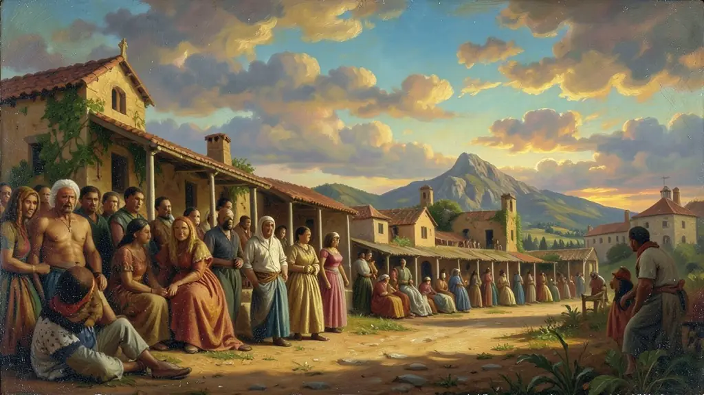
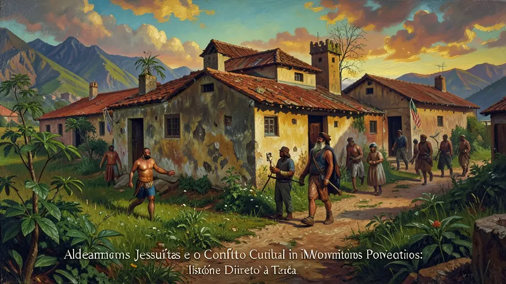
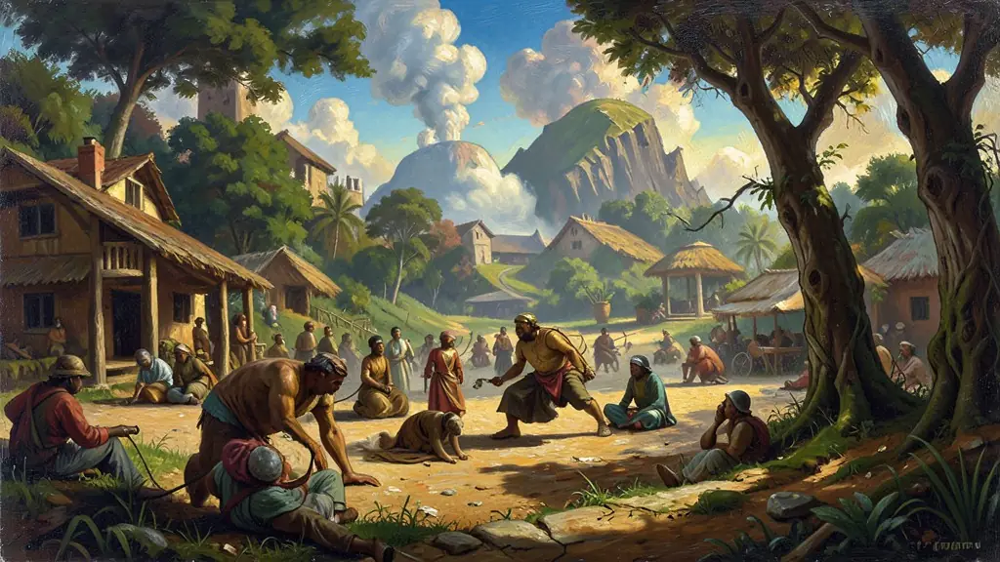

Capítulo 01
1. Diversidade Pré-Cabralina: O Brasil antes do 'Brasil'
Os povos indígenas não eram um bloco único. Havia grandes confederações, como a dos Tamoios e Tupi-Guarani, com complexas rotas de comércio (Peabiru) e sofisticada cerâmica (Marajoara). O desconhecimento dessas estruturas pelos colonizadores justificou a barbárie. O indígena foi usado inicialmente como guia e mão de obra no escambo do pau-brasil antes do início da escravidão açucareira.

Capítulo 02
2. Aldeamentos Jesuítas e o Conflito Cultural
A Companhia de Jesus (Jesuítas) tentou 'proteger' o indígena da escravidão militar, mas ao custo da destruição de sua cultura original. Os aldeamentos (Missões) impunham o catolicismo, a monogamia e o trabalho agrícola europeu. Isso gerou conflitos sangrentos com os Bandeirantes paulistas, que invadiam as missões para capturar indígenas já 'domesticados', levando à Guerra Guaranítica no sul do país.

Capítulo 03
3. O Século XX e a Política Indigenista
O Marechal Rondon buscou pacificar o interior do Brasil. Embora humanista, sua visão era de que o indígena seria um 'brasileiro em formação'. A criação do Parque Indígena do Xingu (1961), pelos irmãos Villas-Bôas, foi a primeira grande vitória territorial, servindo de modelo para a preservação de biomas. Contudo, a ditadura militar tratou o indígena como um entrave ao desenvolvimento, causando o desaparecimento de centenas de etnias.

Capítulo 04
4. Constituição de 1988: A Grande Virada
Pela primeira vez em 500 anos, o Estado brasileiro disse que o indígena tinha o direito de continuar sendo indígena. O artigo 231 diz que as terras ocupadas são bens da União, mas de usufruto exclusivo dos indígenas. Isso impediu que as terras fossem vendidas ou loteadas por fazendeiros, garantindo a reprodução física e cultural dos povos originários.
Capítulo 05
5. Desafios Atuais: Marco Temporal e Garimpo
A tese do 'Marco Temporal' afirma que os indígenas só teriam direito às terras que ocupavam em 5 de outubro de 1988. Os movimentos indígenas argumentam que isso é injusto, pois muitos haviam sido expulsos violentamente de suas terras antes dessa data. Além disso, o garimpo ilegal e o desmatamento ameaçam a segurança alimentar e a saúde das aldeias (como os Yanomami), tornando a questão indígena o centro do debate sobre o futuro do planeta.
A história dos povos indígenas no Brasil é marcada por cinco séculos de genocídios físicos e apagamentos culturais, mas também por uma resistência contínua e adaptativa. Desde as Confederações de povos nativos contra os colonizadores no século XVI até as atuais lutas por demarcação de terras, o protagonismo indígena tem sido sistematicamente silenciado pelas narrativas oficiais. A Constituição de 1988 marcou um ponto de inflexão ao reconhecer aos índios sua organização social, costumes, línguas e crenças, garantindo-lhes o direito originário às terras que tradicionalmente ocupam.
O conceito de 'terra indígena' transcede a noção de propriedade privada ocidental; para os povos originários, a terra é um patrimônio imaterial indissociável de sua existência física e cultural. A ausência de demarcações e a invasão por garimpeiros e agronegócio representam não apenas crimes ambientais, mas ataques diretos à soberania desses povos. Movimentos como a APIB (Articulação dos Povos Indígenas do Brasil) demonstram que hoje os indígenas são atores políticos plenos, ocupando espaços de poder e usando o direito internacional como escudo contra o retrocesso de garantias constitucionais.
O Enem frequentemente aborda a 'questão indígena' sob a ótica da alteridade e da diversidade. É fundamental compreender que não existe um 'Índio Genérico', mas centenas de etnias com línguas e filosofias distintas. O estudo dessa resistência deve focar em como estes povos conseguiram sobreviver ao processo colonizador, preservando saberes ancestrais sobre a biodiversidade que são hoje cruciais para o debate ambiental global. A luta indígena é, em última instância, a luta pela preservação de uma visão de mundo baseada no equilíbrio, em oposição à exploração desenfreada de recursos.
Fonte: CUNHA, Manuela Carneiro da. História dos Índios no Brasil. São Paulo: Companhia das Letras, 1992.
Atividades interativas
Questões para fixar
A Constituição de 1988 é considerada um marco para os povos indígenas por que:
O lema do Marechal Rondon, 'Morrer se preciso for, matar nunca', resumia a filosofia do SPI (Serviço de Proteção aos Índios). Qual era a crítica moderna a essa política?
Qual foi o principal impacto do contato com os europeus nas populações indígenas no Brasil?
Qual foi o objetivo principal da política assimilacionista do Estado brasileiro em relação aos povos indígenas?
Qual foi o marco legal que reconheceu os direitos originários dos povos indígenas sobre as terras que tradicionalmente ocupam?